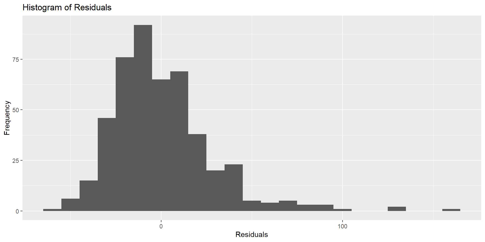
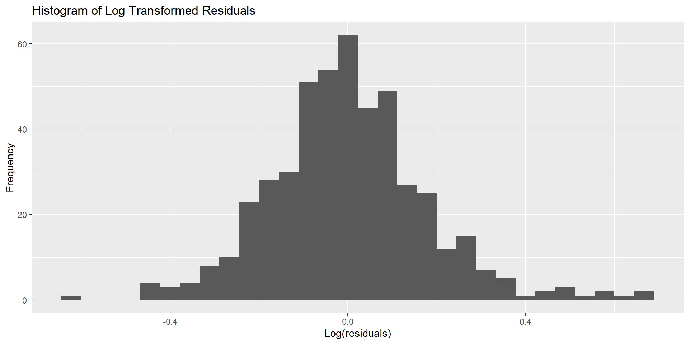
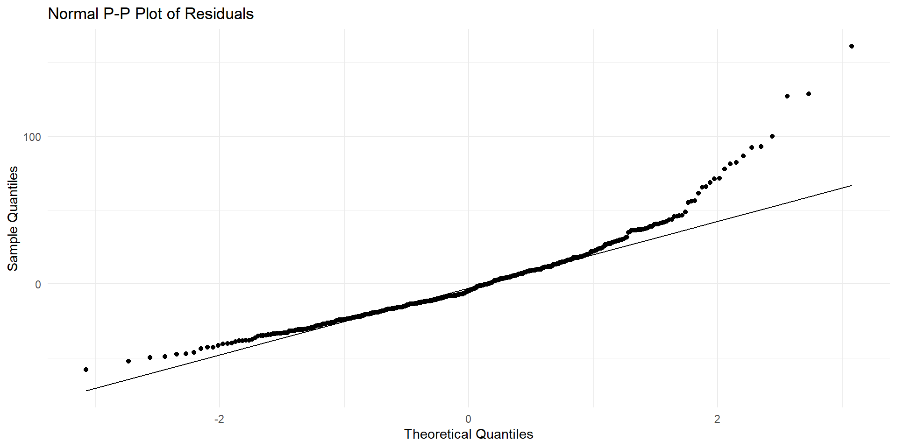
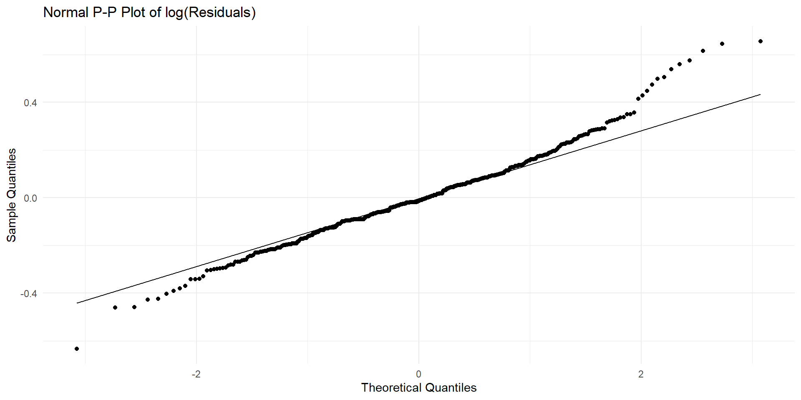

Lecture 9: Model fitting
C91AR: Advanced Statistics using R
2025-03-21
Session outline
- Today, we are going to examine methods for checking how well a model fits the data
- There are a variety of fitting methods worth becoming familiar with
- We are going to look at a few today outlined in Canduela and Raeside (2020)
- On Thursday I will run a code clinic where you can ask me any questions about R, to give you some extra support as your prepare the summative assessment.
Reproducibility & notation
Load packages
Data setup
\(R^{2}\) Coefficient of determination
To this point we have created a regression equation and used it to predict someone’s weight given their height.
But, we also want to know how good a fit our equation is given the data. To calculate this we use the coefficient of determination (\(R^2\)):
\(R^2 = \frac{\text{Sum of Squares Explained by Regression (SSR)}}{\text{Total Sum of Squares (before regression)(TSS)}} = \frac{\underset{i=1}{\stackrel{n}{\sum}}(\hat{y}_{i} - \overline{y})^2}{\underset{i=1}{\stackrel{n}{\sum}}(y_{i} - \overline{y})^{2}}\)
Calculating the total sum of squares
- The total sum of squares (TSS) in the dependent variable (i.e., weight) is split into two parts:
- the part explained by sum of squares explain by regression (SSR), which is the sum of the squared differences between the predicted values (\(\hat{y}_{i}\)) and the mean of the response variable (\(\overline{y}\))
\[\text{Sum of Squares Explained by Regression (SSR)} = \sum_{i=1}^{n} (\hat{y}_{i} - \overline{y})^2\]
- the part that is unexplained sum of squared errors (SSE), which is the squared difference between the observed values (\(y_{i}\)) and the predicted values (\(\hat{y}_{i}\)), since the relationship is never perfect and there are always some residuals.
\[\text{Sum of Squares Errors (SSE)} = \sum_{i=1}^{n} (y_{i} - \overline{y})^2\]
Illustration of the error in regression

\(R^{2}\) Thresholds
- The coefficient of determination can take values between 0 and 1, but is commonly reported as a percentage, as it represent the proportion of the variation in the dependent variable (\(Y_{i}\)) which is explained by the predictor/independent variable (\(X_{i}\)).
- The higher the \(R^{2}\) value (at least \(70\%\)) the better the model fit.
- A reasonable model fit would be more \(R^{2} >= 60\%\).
Exploring the Errors
To assess the quality of the model further we need to look at the errors or residuals \((y_{i} - \hat{y}_{i})\) after running the regression model.
Model residuals should be randomly scattered with no extreme values and should have a mean of zero.
Should these requirements not be met we would have to further investigate whether there is information in the residuals that could be covered by the model or be considered a cause for concern.
A histogram of the residuals and normal probability plot can help you decide how well your residuals fit into the model.
Histogram of model residuals
# Create model for raw data
mod1 <-
lm(weight_lbs ~ height_in,
data = handw)
# Create residuals object
residuals_df <-
mod1$residuals |>
as_tibble() |>
rename(residuals = value)
# Plot the data
ggplot(residuals_df, aes(x = residuals)) +
geom_histogram(binwidth = 10) +
labs(title = "Histogram of Residuals",
x = "Residuals",
y = "Frequency")Are the residuals randomly scattered with no extreme values?
Histogram of model residuals

Transformed data: residuals plot
# Create model for transformed data
mod2 <-
lm(wlog ~ hlog,
data = handw_log)
# Create residuals object
residuals_df <-
mod2$residuals |>
as_tibble() |>
rename(residuals = value)
# Plot the data
ggplot(residuals_df, aes(x = residuals)) +
geom_histogram(bins = 30) +
labs(title = "Histogram of Log Transformed Residuals",
x = "Log(residuals)",
y = "Frequency")Are the residuals randomly scattered with no extreme values?
Transformed data: residuals plot

Quantile quantile (Q-Q) plot
- A Q-Q plot compares the quantiles of the observed data to the quantiles of a theoretical distribution.
- It plots the observed quantiles on the y-axis and the theoretical quantiles on the x-axis.
- The primary purpose of a Q-Q plot is to visually assess how well the observed data fits a specified theoretical distribution.
- It helps identify deviations from the theoretical distribution, such as skewness, kurtosis, or other anomalies.
- In regression analysis and other statistical modeling, Q-Q plots are used to check the normality of residuals, which is an assumption for many statistical tests and models.
Interpreting a Q-Q plot
- If the data points lie approximately along a straight diagonal (45°) line, it suggests that the data follows the theoretical distribution.
- Deviations from the diagonal line indicate departures from the theoretical distribution. For example, a systematic curve might indicate skewness, while points that diverge at the ends might indicate heavy tails.
# Extract residuals
residuals <-
mod1$residuals
# Calculate theoretical quantiles
mod1_quantiles <-
qqnorm(residuals, plot.it = FALSE)$x
# Create a data frame with residuals and theoretical quantiles
pp_df <-
data.frame(
residuals = residuals,
theoretical_quantiles = mod1_quantiles
)
# Plot the P-P plot
ggplot(pp_df, aes(sample = residuals)) +
stat_qq() +
stat_qq_line() +
labs(title = "Normal P-P Plot of Residuals",
x = "Theoretical Quantiles",
y = "Sample Quantiles") +
theme_minimal()
Transformed data: Normal PP plot
# Extract residuals
residuals <-
mod2$residuals
# Calculate theoretical quantiles
mod2_quantiles <-
qqnorm(residuals, plot.it = FALSE)$x
# Create a data frame with residuals and theoretical quantiles
pp_df <-
data.frame(
residuals = residuals,
theoretical_quantiles = mod2_quantiles
)
# Plot the P-P plot
ggplot(pp_df, aes(sample = residuals)) +
stat_qq() +
stat_qq_line() +
labs(title = "Normal P-P Plot of log(Residuals)",
x = "Theoretical Quantiles",
y = "Sample Quantiles") +
theme_minimal()Transformed data: Normal PP plot

Testing the Significance of the model and its coefficients
We can use statistical tests to determine how well we are approximating the population parameters with those in our model. To do this we can use two methods:
Analysis of variance (ANOVA): tests overall significance of the model
\(t\)-test: test the individual significance of the coefficients.
Testing the overall significance of the model
- Testing the overall significance of the model evaluates how well the independent variables reliable predict the dependent variable.
- We can create hypotheses to make our statistical inferences:
\(H_{0}\): The regression model does not explain a significant proportion of the variance in weight (our DV).
VS
\(H_{1}\): The regression model does explain a significant proportion of the variation in weight.
And we test the above using the \(F\)-distribution.
ANOVA for regression modelling
ANOVA for regression
| Source of Variation | Sum of Squares (SS) | Degrees of Freedom (df) | Mean Square (MS) | F-Statistic (F) |
|---|---|---|---|---|
| Model | \(\text{SS}_{\text{model}} = \underset{i=1}{\stackrel{n}{\sum}}(\hat{y}_i - \bar{y})^2\) | ( k ) | \(\text{MSR} = \frac{\text{SSR}}{k}\) | \(\frac{\text{MSR}}{\text{MSE}}\) |
| Residual | \(\text{SS}_{\text{residual}} = \underset{i=1}{\stackrel{n}{\sum}}(y_i - \hat{y}_i)^2\) | ( n - k - 1 ) | \(\text{MSE} = \frac{\text{SSE}}{n - k - 1}\) | |
| Total | \(\text{TSS} = SSR + SSE = \underset{i=1}{\stackrel{n}{\sum}}(y_i - \bar{y})^2\) | ( n - 1 ) |
ANOVA for regression: key
- \(n\) = total number of observations
- \(k\) = total number of independent variables
- \(y\) = the observed values
- \(\overline{y}\) = mean of the dependent variables
- \(\hat{y}_{i}\) = the estimated values
ANOVA for log transformed model
Remember: mod2 <- lm(wlog ~ hlog, data = handw_log)
Analysis of Variance Table
Response: wlog
Df Sum Sq Mean Sq F value Pr(>F)
hlog 1 182.622 182.622 5801.8 < 0.00000000000000022 ***
Residuals 473 14.888 0.031
---
Signif. codes: 0 '***' 0.001 '**' 0.01 '*' 0.05 '.' 0.1 ' ' 1Interpreting the results of ANOVA
- We can see from the output that
hlogthat the slope of the line is significant difference from 0, where \(p < 0.001\). - Thus we reject the null hypothesis (\(H_{0}\)).
Multicollinearity
- Multicollinearity occurs when two or more predictor variables in a regression model are highly correlated.
- It can cause problems in estimating the coefficients of the regression model, leading to unreliable and unstable estimates.
- High multicollinearity inflates the standard errors of the coefficients, making it difficult to determine the individual effect of each predictor.
Variance Inflation Factor (VIF)
- VIF quantifies the extent of multicollinearity in a regression model.
- It measures how much the variance of a regression coefficient is inflated due to multicollinearity.
\[\text{VIF}_{j} = \frac{1}{1 - R_{j}^2}\] - \(\text{VIF}_{j}\) = the variance inflation factor for variable j - \(R_{j}^2\) is the \(R^2\) of the regression of variable j over the rest of the variables
VIF parameters
- VIF near to 1 indicate no or little correlation between predictor variable j and the other predictors.
- VIF values above 4 suggests that multicollinearity may be inflating a coefficient values due to strong predictor correlations
- If VIF > 10 then multicollinearity is serious, pointing to unreliable parameter estimates.
Checking the multicollinearity of our grades regressopn model
Checking the multicollinearity of our grades regressopn model
GPA lecture nclicks
1.277344 1.337824 1.183668 What can you infer from the output?